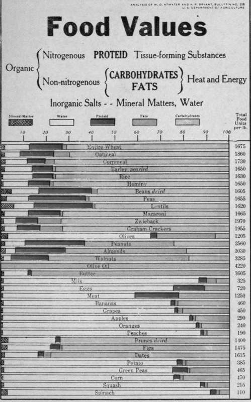
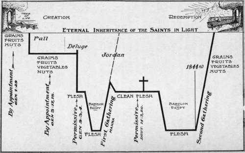

Foods, Their Uses In The Body
Description
This section is from the book "Food And Cookery, Their Relation To Health", by H. S. Anderson. Also available from Amazon: Food Cookery, Their Relation To Health.
Foods, Their Uses In The Body
"To care for the body, by providing for it food that is relishable and strengthening, is one of the first duties of the householder." When men and women study how to supply the needs of the body intelligently, they place themselves on vantage ground. We all have in the beginning a certain vital force from which to draw. To know how to husband it properly is the most essential thing in preserving health.
By taking food into the body the system is nourished and built up. Disease results if this food is improper in quantity, or poor in quality, or if it is poorly prepared for assimilation. There is a constant breaking down of the tissues of the body; every thought of the mind, every movement of a muscle, involves waste, and this waste is repaired from our food. It is highly important, then, that everyone should be able to choose those foods which best supply the elements needed to make good blood, which in turn imparts life and strength, to nerve, muscle, and tissue.
Grains contain the food elements most evenly distributed. Wheat is considered a perfect food, and the representative of all foods, containing properties which so nearly represent the constituent parts of the body structure as to indicate a special Providence in providing it for the human race. Grains are very nutritious, and when cooked under a high degree of heat, as in baking, they are very easily digested and assimilated. When they are cooked by the process of boiling or steaming, they require several hours cooking in order to render them digestible.
In the olive, as in the various nuts, we find nature's storehouse of fats. These, when properly prepared, supply the place of animal oil and fats.
Fruits are used not so much with a view of supplying nutriients as for other purposes; the organic acids and essential oils, with the easily digestible form in which the nutrients are present, are factors which give fruits a high value in the dietary. These acids and essential oils impart palatibility to the food, and assist functionally in the digestive process.
Figs and prunes contain chemical compounds that are laxative in character.
In our study of the purposes which the various food elements serve in the vital economy, and of the foods best adapted to the accomplishment of these purposes, valuable help is given us in a practical knowledge of the composition of the various food materials, which enables us to arrive at an idea of the real value of the food in question. See Plate I.
In speaking of food, we understand something which is capable, upon being taken into the body, of either repairing its waste or of furnishing it with material from which to produce heat and muscular work. This brings to view the two main functions of food in the body. By the former function, food provides for the conservation of the material of the body; by the latter, conservation of bodily energy is maintained. Substances which are unable to help in the one or the other of these directions can not be called food. Examples of such non-foods are to be found in extractives of meat, tea, coffee, spices, etc. These have no nutritive value whatever.
All foods are made up of one or more of three distinct classes of organic compounds, known as proteid or alouminous substances, carbohydrates and fats, and different inorganic salts. These substances are spoken of as the "nutritive constituents" of food, and may be separated into four divisions:—
1. The proteid or nitrogenous substances are represented in the food by the casein in milk, the curd of the milk being very highly nitrogenous; the gluten of the wheat; the albumen in the white of egg, which is the purest form of proteid; the legumen in peas and beans; and the myosin of lean meat.
2. The carbohydrates are represented by the starches and sugars in the various foods.
3. Fats, as olive oil, butter, the oil found in the olive, nuts, and to some extent in most articles of food.
4. The inorganic substances, as water and mineral matters.
The chief office of proteid matter is to provide for the growth and repair of the material of the body. The carbohydrates and fats furnish the fuel for the body. They yield the heat that keeps it warm and the energy that enables it to work. The mineral matters are required by the body for the building of the bones and the teeth.
The changes which food undergoes in the body are essentially changes due to oxidation. Latent heat is just as surely found in the food we use as in wood and coal. They are both waiting to be oxidized, that they may be converted into heat and energy.
The latent energy in different foods has been determined by their oxidation, outside the body, in the aparatus known as the bomb Calorimeter. "The amount of heat given off in the oxidation of a given quantity of any material is called its 'heat combustion,' and is taken as a measure of its latent and potential energy." Now the calorie is the unit measure or standard of heat production, and means the amonnt of heat necessary to raise the temperature of one kilogram of water 1° C, or about one pint of water 4° F. Careful observation by Atwater, Rubner, Chittenden, and others, has shown that the heat value of one gram of each of the three chief nutritive constituents of food when taken into the'tissues is as follows:— la gram of proteid yields 4 calories 1 " " carbohydrates yields 4 calories 1 " " fats yields 8.9 calories Bulletin No. 142, U. S. Dept. of Agriculture.
A. 28.3 grams equals 1 ounce.
As the ounce is made the standard or unit in calculating weight, so the calorie is the standard of heat production. By the figures in the column at the right hand side of chart (Plate I.), are represented the total amount of calories or food units contained in one pound of each of the various foods under consideration. The building material—proteid —is represented by the red color, and the carbohydrates by the green, etc.
The vital part of all tissue is proteid. Without proteid the body would waste away, for the wear and tear of tissue must be made good. Though there is no article of diet, except sugar and pure fat, into which proteid matter does not enter to a greater or less degree, yet there are foods which contain an unusually high per cent of proteid, known as proteid foods. These are the peas, beans, lentils, nuts, eggs, and meat.
The fact that proteid matter is an essential element for the growth and repair of the body tissues, has a tendency to lead people to believe that they might be benefited by the consumption of large quantities of proteid foods; when the fact is, the body can use only a limited amount for the development and repair of tissues. Although proteid matter is capable of yielding a certain amount of heat on oxidation, it is inferior for this purpose to carbohydrates and fats; because, on being burned in the body, it yields certain deleterious products which throw upon the liver and kidneys an unnecessary amount of labor that overtaxes them and lays them liable to attacks of disease. Many of the ailments so prevalent to-day, as rheumatism, gout, gastro-intestinal disturbances, indigestion and liver troubles, have been found to be closely associated with the habitual overeating of proteid foods.
There is wisdom in a diet that shall provide an abundance of carbohydrates and fats, proteid being added only in sufficient amounts to meet the needs of the body for nitrogen and for the development of fresh muscle fibers, etc. Careful experiments have demonstrated that the body is best sustained in health, and strength and endurance promoted, by a diet which contains a proportion of one ounce of proteid matter to from ten to twelve ounces of carbohydrates and fats.
A study of the composition of the various foods will enable us to see the wise provision made for man in the diet appointed for him in the beginning. Man in adding to his diet flesh meats with their exceedingly high per cent of proteid, besides other objectionable features connected with its use, finds himself grappling with a problem whose only solution is to be found in a study of cause and effect.
In the diet appointed in the beginning, man is guarded in this respect; as in nature, we find the various food elements better balanced to meet the needs of the body. The numerous exhaustive works of to-day, written on the subject of diet and the needs of the body, are designed to fill a long felt want. They are the response of thinking men to a world's great need. To meet this great need, God has sent us a message of health reform which comprehends man's complete restoration, physically and spiritually. A quotation from Ministry of Healing, gives a key to the divinely appointed plan: "In His written Word and in the great book of nature, He has revealed the principles of life. It is our work to obtain a knowledge of these principles, and by obedience to cooperate with Him in restoring health to the body as well as to the soul."—p. 115.
The accompanying diagram, (Fig. I.) will help to bring before our minds the Bible picture of our original home, and of God's tender care over His erring children in giving them light and hope through all the different phases of their rebellion and apostasy; and it shows that He is actually leading them back step by step to Eden restored. He who created man and Who understands his needs, appointed Adam his food, as it is written, "Behold, I have given you every herb yielding seed, and every tree, in which is the fruit of a tree yielding seed; to you it shall be for food." —Gen. 1:29. A.
Fig. I. R. V. After the fall, when the ground was cursed for man's sake, the herb of the field was added to his diet.
Then we are brought down to the time of the flood, when all vegitation was destroyed by water, God permitted man to eat flesh. Next we find the people of God down in the land of Egypt where they were in heavy bondage, after which the Lord brought them out with a strong hand and by an outstretched arm to make them the depositaries of His holy law, and through them it was designed that all the world should come to a knowledge of the true God. Their health was jealously guarded, and they were given a fleshless diet. God desired to make them His peculiar treasure above all people; but they cried for flesh, so He permitted them to eat clean flesh.
Then we come down to the end of the Jewish dispensation, at the time when the gospel was preached to the Gentiles, saying, "Ye are the temple of God." "There shall in no wise enter into it anything unclean".
In ancient time, a distinction between things clean and things unclean was made in all matters of diet. This was no arbitrary distinction, for the things prohibited were unwholesome, and the fact that they were pronounced unclean taught the lesson that the use of injurious foods is defiling.
To the chosen people of God, the laws relating to both physical and spiritual well being were made plain, and on condition of obedience He assured them: "The Lord will take away from thee all sickness."—Deut. 7. 15 "And ye shall serve the Lord your God, and He shall bless thy bread and thy water; and I will take sickness away from the midst of thee."—Ex. 23:25. These promises are for us to-day. The same principle which directed in giving these sanitary laws and regulations in times of old, and which has been the foundation in every true reform to the present time, is no less powerful to-day, and is summed up in these words: "Whether therefore ye eat, or drink, or whatsoever ye do, do all to the glory of God. "—1 Cor. 10:31. This principle, if heeded, will guide in all matters of diet and hygiene, as in every act of life. It will preserve us from intemperance in all its varied forms. "Every practice which destroys the physical, mental or spiritual energies, is sin. The laws of nature, as truly as the precepts of the decalogue, are divine; and only in obedience to them can health be recovered and preserved".
There is great need to-day of that education that not merely teaches right methods in the treatment of the sick, but which encourages right habits of living, and spreads a knowledge of right principles. The desire of God for every human being is expressed in these words: "Beloved, I wish above all things that thou mayest prosper and be in health, even as thy soul prospereth."—3 John 2. Every "Thou shalt not," whether in physical or moral law, implies a promise. If we obey it, blessing will attend our steps, and we will know the meaning of the promise of God to His people which says, "I am the Lord that healeth thee."—Ex. 15:26.
Continue to:
- prev: Preface
- Table of Contents
- next: Food Economy